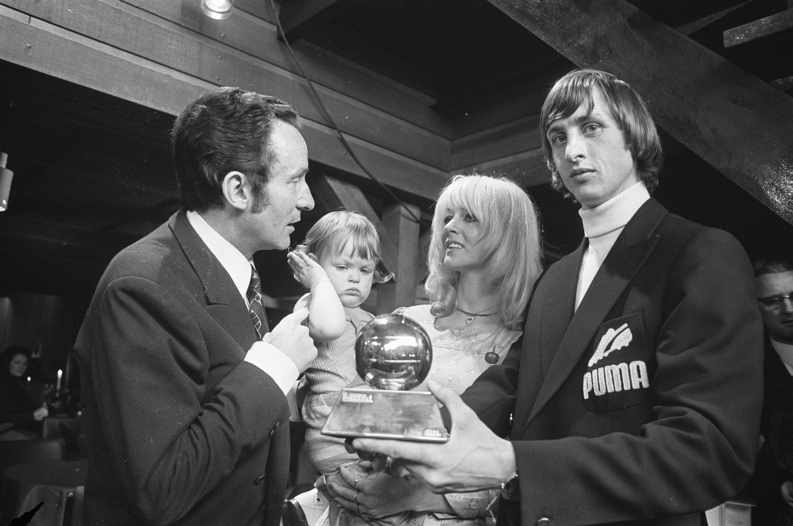
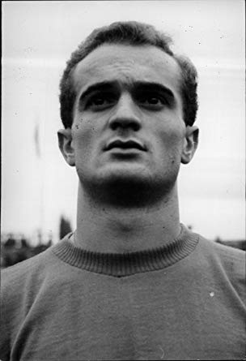
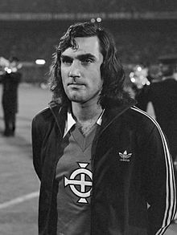

Johan CRUYFF - 1971

- Le Hollandais volant
Nationalité : Hollandaise
Né le :25 avril 1947, à Amsterdam (HOL)
Décédé le 24 mars 2016 à Barcelone (ESP)
Taille : 1,80
Poids : 71 kg
Poste : attaquant
Clubs : Ajax Amsterdam (1957-1973), FC Barcelone (1973-1978), Los Angeles Aztecs (1979), Washington Diplomats (1980-1981), Levante (1981), Ajax Amsterdam (1981-1983) et Feyenoord Rotterdam (1983-1984)
Palmarès de joueur : Coupe intercontinentale des clubs 1972 ; Supercoupe d'Europe 1973 ; Coupe des champions 1971, 1972 et 1973 ; Championnat des Pays-Bas 1966, 1967, 1968, 1970, 1972, 1973, 1982, 1983 et 1984 ; Championnat d'Espagne 1974 ; Coupe des Pays-Bas 1967, 1970, 1971, 1972, 1983 et 1984 ; Coupe d'Espagne 1978 ; meilleur buteur du Championnat des Pays-Bas 1967 (33 buts) et 1972 (25)
Bilan en club : 668 matchs, 375 buts
Bilan en équipe nationale : 48 sélections A, 33 buts (1966-1977)
Bilan en phase finale de Coupe du monde : 1 participation (2e en 1974), 7 matches, 3 buts (1974)
Palmarès Ballon d'Or : vainqueur en 1971, 1973, 1974 et (3e en 1975)
Carrière d'entraîneur : Ajax Amsterdam (1985-1988), FC Barcelone (1988-1996)
Palmarès d'entraîneur : Supercoupe d'Europe 1992 ; Ligue des champions 1992 ; Coupe des Coupes 1987 et 1989 ; Championnat d'Espagne 1991, 1992, 1993 et 1994 ; Coupe des Pays-Bas 1986 et 1987 ; Coupe d'Espagne 1990
Classement du Ballon d’Or France Football 1971 :
Johan Cruyff (Pays-Bas / Ajax Amsterdam),
116 pts.

Alessandro Mazzola (Italie / Inter Milan),
57 pts.

George Best (Irlande du Nord / Manchester United),
56 pts.
Retour à l'accueil
 Johan CRUYFF - 1971
Johan CRUYFF - 1971